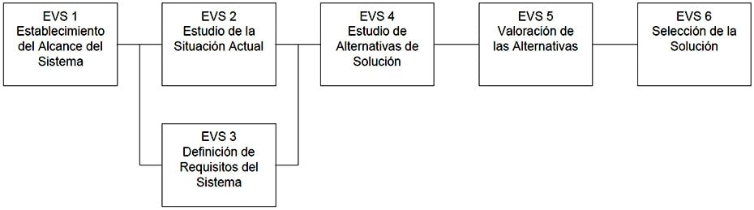
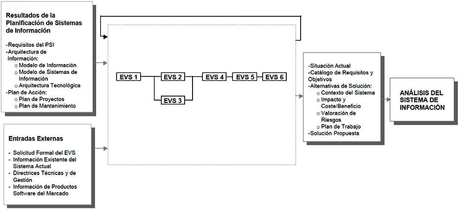

3 Estudio de Viabilidad del Sistema
3.1 Descripción y objetivos
Mientras que el Plan de Sistemas de Información tiene como objetivo proporcionar un marco estratégico que sirva de referencia para los Sistemas de Información de un ámbito concreto de una organización, el objetivo del Estudio de Viabilidad del Sistema es el análisis de un conjunto concreto de necesidades para proponer una solución a corto plazo, que tenga en cuenta restricciones económicas, técnicas, legales y operativas. La solución obtenida como resultado del estudio puede ser la definición de uno o varios proyectos que afecten a uno o varios sistemas de información ya existentes o nuevos. Para ello, se identifican los requisitos que se ha de satisfacer y se estudia, si procede, la situación actual.
A partir del estado inicial, la situación actual y los requisitos planteados, se estudian las alternativas de solución. Dichas alternativas pueden incluir soluciones que impliquen desarrollos a medida, soluciones basadas en la adquisición de productos software del mercado o soluciones mixtas. Se describe cada una de las alternativas, indicando los requisitos que cubre.
Una vez descritas cada una de las alternativas planteadas, se valora su impacto en la organización, la inversión a realizar en cada caso y los riesgos asociados. Esta información se analiza con el fin de evaluar las distintas alternativas y seleccionar la más adecuada, definiendo y estableciendo su planificación.
Si en la organización se ha realizado con anterioridad un Plan de Sistemas de Información que afecte al sistema objeto de este estudio, se dispondrá de un conjunto de productos que proporcionarán información a tener en cuenta en todo el proceso.
Las actividades que engloba este proceso se recogen en la siguiente figura, en la que se indican las actividades que pueden ejecutarse en paralelo y las que precisan para su realización resultados originados en actividades anteriores.

ESTUDIO DE VIABILIDAD DEL SISTEMA

PARTICIPANTES EN LAS ACTIVIDADES DEL PROCESO EVS
ESTUDIO DE VIABILIDAD DEL SISTEMA ACTIVIDADES EVS 1 EVS 2 EVS 3 EVS 4 EVS 5 EVS 6 Analistas X X X X X X Comité de Dirección X X Directores Usuarios X
Equipo de Soporte Técnico X
Especialistas en Comunicaciones X
Jefe de Proyecto X X X X X X Responsable Mantenimiento X
Responsables de Seguridad X
Técnicos de Sistemas X
Usuarios Expertos X X X
TÉCNICAS/PRÁCTICAS UTILIZADAS EN LAS ACTIVIDADES DEL PROCESO EVS ESTUDIO DE VIABILIDAD DEL SISTEMA ACTIVIDADES EVS 1 EVS 2 EVS 3 EVS 4 EVS 5 EVS 6 Análisis Coste/Beneficio X
Casos de Uso X
Catalogación X X X X
Diagrama de Clases X X
Diagrama de Descomposición Funcional X
Diagrama de Flujo de Datos X X X
Diagrama de Interacción de Objetos X
Diagrama de Representación X X
Impacto en la Organización X
Matricial X X
Modelo Entidad/Relación Extendido X X
Planificación X
Presentación X Sesiones de trabajo X X X X Actividades
Actividad EVS 1: Establecimiento del Alcance del Sistema
Actividad EVS 2: Estudio de la Situación Actual
Actividad EVS 3: Definición de Requisitos del Sistema
Actividad EVS 4: Estudio de Alternativas de Solución
Actividad EVS 5: Valoración de las Alternativas
Actividad EVS 6: Selección de la Solución3.2 Actividad EVS 1: Establecimiento del Alcance del Sistema
En esta actividad se estudia el alcance de la necesidad planteada por el cliente o usuario, o como consecuencia de la realización de un PSI, realizando una descripción general de la misma. Se determinan los objetivos, se inicia el estudio de los requisitos y se identifican las unidades organizativas afectadas estableciendo su estructura.
Se analizan las posibles restricciones, tanto generales como específicas, que puedan condicionar el estudio y la planificación de las alternativas de solución que se propongan.
Si la justificación económica es obvia, el riesgo técnico bajo, se esperan pocos problemas legales y no existe ninguna alternativa razonable, no es necesario profundizar en el estudio de viabilidad del sistema, analizando posibles alternativas y realizando una valoración y evaluación de las mismas, sino que éste se orientará a la especificación de requisitos, descripción del nuevo sistema y planificación.
Se detalla la composición del equipo de trabajo necesario para este proceso y su planificación. Finalmente, con el fin de facilitar la implicación activa de los usuarios en la definición del sistema, se identifican sus perfiles, dejando claras sus tareas y responsabilidades. TAREA PRODUCTOS TÉCNICAS Y PRÁCTICAS PARTICIPANTES EVS 1.1: Estudio de la Solicitud
Descripción General del Sistema
Catálogo Objetivos EVS
Catálogo de Requisitos
Catalogación
Sesiones de trabajo
Comité de Dirección
Jefe de Proyecto
AnalistasEVS 1.2: Identificación del Alcance del Sistema
Descripción General del Sistema:
Contexto del Sistema
Estructura Organizativa
Catálogo de Requisitos
Catálogo de Usuarios
Diagrama de Flujo de Datos
Diagrama de Descomposición Funcional
Catalogación
Sesiones de trabajo
Comité de Dirección
Jefe de Proyecto
AnalistasEVS 1.3: Especificación del Alcance del EVS
Catálogo de Objetivos del EVS
Catálogo de Usuarios
Plan de Trabajo
Catalogación
Sesiones de trabajo
Comité de Dirección
Jefe de Proyecto
Analistas3.2.1 Tarea EVS 1.1: Estudio de la Solicitud
Se realiza una descripción general de la necesidad planteada por el usuario, y se estudian las posibles restricciones de carácter económico, técnico, operativo y legal que puedan afectar al sistema. Antes de iniciar el estudio de los requisitos del sistema se establecen los objetivos generales del Estudio de Viabilidad, teniendo en cuenta las restricciones identificadas anteriormente.
Si el sistema objeto de estudio se encuentra en el ámbito de un Plan de Sistemas de Información vigente, se debe de tomar como referencia el catálogo de requisitos y la arquitectura de información resultante del mismo, como información adicional para la descripción general del sistema y determinación de los requisitos iniciales. Productos
De entrada
Catálogo de Requisitos del PSI (PSI 9.2)
Arquitectura de Información (PSI 9.2)
Solicitud (externo)De salida
Descripción General del Sistema
Catálogo de Objetivos del EVS
Catálogo de RequisitosPrácticas
Catalogación
Sesiones de trabajoParticipantes
Comité de Dirección
Jefe de Proyecto
Analistas3.2.2 Tarea EVS 1.2: Identificación del Alcance del Sistema
Se analiza el alcance de la necesidad planteada y se identifican las restricciones relativas a la sincronización con otros proyectos, que puedan interferir en la planificación y futura puesta a punto del sistema objeto del estudio. Esta información se recoge en el catálogo de requisitos.
Si el sistema pertenece al ámbito de un Plan de Sistemas de Información, se debe tener en cuenta la arquitectura de información propuesta para analizar el alcance del sistema e identificar los sistemas de información que quedan fuera del ámbito del estudio. Además, se estudia el plan de proyectos, para determinar las posibles dependencias con otros proyectos.
Una vez establecido el alcance, se identifican las unidades organizativas afectadas por el sistema, así como su estructura y responsables de las mismas. Para determinar los responsables se tiene en cuenta a quiénes afecta directamente y quiénes pueden influir en el éxito o fracaso del mismo. Productos
De entrada
Plan de Proyectos (PSI 9.2)
Arquitectura de Información (PSI 9.2)
Descripción General del Sistema (EVS 1.1)
Catálogo de Objetivos del EVS (EVS 1.1)
Catálogo de Requisitos (EVS 1.1)De salida
Descripción General del Sistema:
Contexto del Sistema
Estructura Organizativa
Catálogo de Requisitos:
Requisitos Relativos a Restricciones o Dependencias con Otros Proyectos
Catálogo de UsuariosTécnicas
Diagrama de Flujo de Datos
Diagrama de Descomposición FuncionalPrácticas
Catalogación
Sesiones de trabajoParticipantes
Comité de Dirección
Jefe de Proyecto
Analistas3.2.3 Tarea EVS 1.3: Especificación del Alcance del EVS
En función del alcance del sistema y los objetivos del Estudio de Viabilidad del Sistema, se determinan las actividades y tareas a realizar. En particular, hay que decidir si se realiza o no el estudio de la situación actual y, en el caso de considerarlo necesario, con qué objetivo. Si el sistema pertenece al ámbito de un Plan de Sistemas de Información, los criterios que pueden orientar sobre la necesidad de llevar a cabo el estudio de la situación actual dependen de la arquitectura de información propuesta, en cuanto a la identificación de los sistemas de información actuales, implicados en el ámbito de este estudio, que se haya decidido conservar.
Se identifican los usuarios participantes de las distintas unidades organizativas afectadas para la realización del Estudio de Viabilidad del Sistema, determinando previamente sus perfiles y responsabilidades.
Debe comunicarse el plan de trabajo a los usuarios identificados como implicados en el Estudio de Viabilidad, solicitando su aceptación y esperado su confirmación. Productos
De entrada
Arquitectura de Información (PSI 9.2)
Catálogo de Objetivos del EVS (EVS 1.1)
Descripción General del Sistema (EVS 1.2)
Catálogo de Usuarios (EVS 1.2)De salida
Catálogo de Objetivos del EVS:
Objetivos del Estudio de la Situación Actual
Catálogo de Usuarios
Plan de TrabajoPrácticas
Catalogación
Sesiones de trabajoParticipantes
Comité de Dirección
Jefe de Proyecto
Analistas3.3 Actividad EVS 2: Estudio de la Situación Actual
La situación actual es el estado en el que se encuentran los sistemas de información existentes en el momento en el que se inicia su estudio.
Teniendo en cuenta el objetivo del estudio de la situación actual, se realiza una valoración de la información existente acerca de los sistemas de información afectados. En función de dicha valoración, se especifica el nivel de detalle con que se debe llevar a cabo el estudio. Si es necesario, se constituye un equipo de trabajo específico para su realización y se identifican los usuarios participantes en el mismo.
Si se decide documentar la situación actual, normalmente es conveniente dividir el sistema actual en subsistemas. Si es posible se describirá cada uno de los subsistemas, valorando qué información puede ser relevante para la descripción.
Como resultado de esta actividad se genera un diagnóstico, estimando la eficiencia de los sistemas de información existentes e identificando los posibles problemas y las mejoras. TAREA PRODUCTOS TÉCNICAS Y PRÁCTICAS PARTICIPANTES EVS 2.1: Valoración del Estudio de la Situación Actual
Descripción de la Situación Actual:
Contexto del Sistema Actual
Descripción de los Sistemas de Información Actuales
Diagrama de Flujo de Datos
Diagrama de Representación
Sesiones de trabajo
Jefe de Proyecto
Analistas
Directores de UsuariosEVS 2.2: Identificación de los Usuarios Participantes en el Estudio de la Situación Actual
Catálogo de Usuarios
Sesiones de trabajo
Catalogación
Jefe de Proyecto
Directores de UsuariosEVS 2.3: Descripción de los Sistemas de Información Existentes
Descripción de la Situación Actual:
Descripción Lógica del Sistema Actual
Modelo Físico del Sistema Actual (opcional)
Matriz Localización Módulos y Datos
Modelo Entidad/Relación Extendido
Diagrama de Flujo de Datos
Diagrama de Clases
Diagrama de Interacción de Objetos
Matricial
Diagrama de Representación
Sesiones de trabajo
Analistas
Usuarios Expertos
Equipo de Soporte TécnicoEVS 2.4: Realización del Diagnóstico de la Situación Actual
Descripción de la Situación Actual:
Diagnóstico de la Situación Actual
Analistas
Responsable de Mantenimiento3.3.1 Tarea EVS 2.1: Valoración del Estudio de la Situación Actual
En función de los objetivos establecidos para el estudio de la situación actual, y considerando el contexto del sistema especificado en la descripción general del mismo, se identifican los sistemas de información existentes que es necesario analizar con el fin de determinar el alcance del sistema actual. Asimismo, se decide el nivel de detalle con el que se va a llevar a cabo el estudio de cada uno de los sistemas de información implicados. En el caso de haber realizado un Plan de Sistemas de Información que afecte a dicho sistema, se toma como punto de partida para este análisis la arquitectura de información propuesta.
Para poder abordar el estudio, se realiza previamente una valoración de la información existente acerca de los sistemas de información afectados por el EVS. Se debe decidir si se realizan o no los modelos lógicos del sistema actual o si se describe el modelo físico, en función de los siguientes criterios:
Si existen los modelos lógicos, y son fiables, se utilizan en la tarea Descripción de los Sistemas de Información Existentes (EVS 2.3)
Si no existen dichos modelos, o no son fiables, se considera el tiempo de vida estimado para el sistema de información en función de la antigüedad, la obsolescencia de la tecnología o la falta de adecuación funcional para determinar sí se obtienen los modelos lógicos y físicos del sistema actual o por el contrario no se elabora ningún modelo.La información relativa a los sistemas de información que se decida analizar, se obtiene mediante sesiones de trabajo con los Directores de Usuarios y el apoyo de los profesionales de Sistemas y Tecnologías de la Información y Comunicaciones (STIC) que se considere necesario. Productos
De entrada
Información Existente del Sistema Actual (externo)
Arquitectura de Información (PSI 9.2)
Catálogo de Objetivos del EVS (EVS 1.3)
Descripción General del Sistema (EVS 1.2)De salida
Descripción de la Situación Actual:
Contexto del Sistema Actual
Descripción de los Sistemas de Información ActualesTécnicas
Diagrama de Flujo de DatosPrácticas
Diagrama de Representación
Sesiones de TrabajoParticipantes
Jefe de Proyecto
Analistas
Directores de Usuarios3.3.2 Tarea EVS 2.2: Identificación de los Usuarios Participantes en el Estudio de la Situación Actual
En función del nivel de detalle establecido para el estudio de la situación actual, se identifican los usuarios participantes de cada una de las unidades organizativas afectadas por dicho estudio. Se informa a los usuarios identificados como implicados en el Estudio de la Situación Actual, se solicita su aceptación y se espera su confirmación. Productos
De entrada
Descripción General del Sistema (EVS 1.2)
Catálogo de Usuarios (EVS 1.2)
Descripción de la Situación Actual (EVS 1.2)De salida
Catálogo de UsuariosPrácticas
Catalogación
Sesiones de TrabajoParticipantes
Jefe de Proyecto
Directores de Usuarios3.3.3 Tarea EVS 2.3: Descripción de los Sistemas de Información Existentes
En esta tarea se describen los sistemas de información existentes afectados, según el alcance y nivel de detalle establecido en la tarea Valoración del Estudio de la Situación Actual (EVS 2.1), mediante sesiones de trabajo con los usuarios designados para este estudio.
Si se ha decidido describir los sistemas a nivel lógico, y si existe un conocimiento suficiente de los sistemas de información a especificar, puede hacerse directamente, aplicando las técnicas de modelización y siguiendo un método descendente. Si no se dispone del conocimiento suficiente, se construyen los modelos a partir de la descripción del modelo físico, es decir, de forma ascendente.
Si se tiene que describir el modelo físico, se puede hacer mediante un Diagrama de Representación en el que se recojan todos los componentes físicos y sus referencias cruzadas. Otra opción es describir el modelo físico de forma más detallada, para lo que es necesaria la utilización de herramientas de tipo scanner.
Es conveniente indicar la localización geográfica y física actual de los módulos y datos de los sistemas de información afectados, evaluando al mismo tiempo la redundancia en las distintas unidades organizativas. Productos
De entrada
Descripción de la Situación Actual (EVS 2.1)
Catálogo de Usuarios (EVS 2.2)De salida
Descripción de la Situación Actual:
Descripción Lógica del Sistema Actual
Modelo Físico del Sistema Actual (opcional)
Matriz de Localización Geográfica y Física de Módulos y Datos, incluidas las redundanciasTécnicas
Diagrama de Flujo de Datos
Modelo Entidad/Relación extendido
Diagrama de Clases
Diagrama de Interacción de Objetos
MatricialPrácticas
Diagrama de Representación
Sesiones de TrabajoParticipantes
Analistas
Usuarios Expertos
Equipo de Soporte Técnico3.3.4 Tarea EVS 2.4: Realización del Diagnóstico de la Situación Actual
Con el fin de elaborar el diagnóstico de la situación actual se analiza la información de los sistemas de información existentes, obtenida en la tarea anterior y se identifican problemas, deficiencias y mejoras. Estas últimas deben tenerse en cuenta en la definición de los requisitos.
En el caso de haber realizado un Plan de Sistemas de Información, se considera la valoración realizada sobre los sistemas de información actuales que pertenecen al ámbito de este estudio.
Si se ha tomado la decisión de no describir la situación actual, se realiza un diagnóstico global justificando esta decisión. Productos
De entrada
Descripción de la Situación Actual (EVS 2.3)
Catálogo de Objetivos del EVS (EVS 1.3)
Valoración de la Situación actual (PSI 5.3)De salida
Descripción de la Situación Actual:
Diagnóstico de Situación ActualParticipantes
Analistas
Responsable de Mantenimiento3.4 Actividad EVS 3: Definición de Requisitos del Sistema
Esta actividad incluye la determinación de los requisitos generales, mediante una serie de sesiones de trabajo con los usuarios participantes, que hay que planificar y realizar. Una vez finalizadas, se analiza la información obtenida definiendo los requisitos y sus prioridades, que se añaden al catálogo de requisitos que servirá para el estudio y valoración de las distintas alternativas de solución que se propongan. TAREA PRODUCTOS TÉCNICAS Y PRÁCTICAS PARTICIPANTES EVS 3.1: Identificación de las Directrices Técnicas y de Gestión
Catálogo de Normas
Catalogación
Jefe de Proyecto
Analistas
Usuarios ExpertosEVS 3.2: Identificación de Requisitos
Identificación de Requisitos
Sesiones de trabajo
Jefe de Proyecto
Analistas
Usuarios ExpertosEVS 3.3: Catalogación de Requisitos
Catálogo de Requisitos
Catalogación
Jefe de Proyecto
Analistas
Usuarios Expertos3.4.1 Tarea EVS 3.1: Identificación de las Directrices Técnicas y de Gestión
La realización de esta tarea permite considerar los términos de referencia para el sistema en estudio desde el punto de vista de directrices tanto técnicas como de gestión. Si el sistema en estudio pertenece al ámbito de un Plan de Sistemas de Información vigente, éste proporciona un marco de referencia a considerar en esta tarea.
Con este fin, se recoge información sobre los estándares y procedimientos que deben considerarse al proponer una solución, relativos a:
Políticas técnicas:
Gestión de Proyectos (seguimiento, revisión y aprobación final).
Desarrollo de Sistemas (existencia de normativas, metodologías y técnicas de programación).
Arquitectura de Sistemas (centralizada, distribuida).
Política de Seguridad (control de accesos, integridad de datos, disponibilidad de aplicaciones).
Directrices de Planificación.
Directrices de Gestión de Cambios.
Directrices de Gestión de Calidad.Productos
De entrada
Catálogo de Normas del PSI (PSI 3.2)
Recopilación de Directrices Técnicas y de Gestión (externo)De salida
Catálogo de NormasPrácticas
CatalogaciónParticipantes
Jefe de Proyecto
Analistas
Usuarios Expertos3.4.2 Tarea EVS 3.2: Identificación de Requisitos
Para la obtención de las necesidades que ha de cubrir el sistema en estudio, se debe decidir qué tipo de sesiones de trabajo se realizarán y con qué frecuencia tendrán lugar, en función de la disponibilidad de los usuarios participantes.
Si se ha realizado el Estudio de la Situación Actual (EVS 2), puede ser conveniente seleccionar la información de los sistemas de información existentes que resulte de interés para el desarrollo de dichas sesiones de trabajo.
Una vez establecidos los puntos anteriores, se planifican las sesiones de trabajo con los usuarios participantes identificados al estudiar el alcance del Estudio de Viabilidad del Sistema (EVS 1.3), y se realizan de acuerdo al plan previsto. La información obtenida depende del tipo de sesión de trabajo seleccionado. Productos
De entrada
Descripción General del Sistema (EVS 1.2)
Catálogo de Requisitos (EVS 1.2)
Equipo de Trabajo del EVS (EVS 1.3)
Catálogo de Usuarios (EVS 2.2/1.3)
Descripción de la Situación Actual (EVS 2.4)De salida
Identificación de RequisitosPrácticas
Sesiones de TrabajoParticipantes
Jefe de Proyecto
Analistas
Usuarios Expertos3.4.3 Tarea EVS 3.3: Catalogación de Requisitos
Se analiza la información obtenida en las sesiones de trabajo para la Identificación de Requisitos, definiendo y catalogando los requisitos (funcionales y no funcionales) que debe satisfacer el sistema, indicando sus prioridades.
Se incluirán también requisitos relativos a distribución geográfica y entorno tecnológico. Productos
De entrada
Identificación de Requisitos (EVS 3.2)
Catálogo de Requisitos (EVS 1.2)De salida
Catálogo de RequisitosPrácticas
CatalogaciónParticipantes
Jefe de Proyecto
Analistas
Usuarios Expertos3.5 Actividad EVS 4: Estudio de Alternativas de Solución
Este estudio se centra en proponer diversas alternativas que respondan satisfactoriamente a los requisitos planteados, considerando también los resultados obtenidos en el Estudio de la Situación Actual (EVS 2), en el caso de que se haya realizado.
Teniendo en cuenta el ámbito y funcionalidad que debe cubrir el sistema, puede ser conveniente realizar, previamente a la definición de cada alternativa, una descomposición del sistema en subsistemas.
En la descripción de las distintas alternativas de solución propuestas, se debe especificar si alguna de ellas está basada, total o parcialmente, en un producto existente en el mercado. Si la alternativa incluye un desarrollo a medida, se debe incorporar en la descripción de la misma un modelo abstracto de datos y un modelo de procesos, y en orientación a objetos, un modelo de negocio y un modelo de dominio. TAREA PRODUCTOS TÉCNICAS Y PRÁCTICAS PARTICIPANTES EVS 4.1: Preselección de Alternativas de Solución
Descripción Inicial del Sistema en Subsistemas (opcional)
Alternativas de Solución a Estudiar
Diagrama de Representación
Jefe de Proyecto
Analistas
Técnico de sistemasEVS 4.2: Descripción de las Alternativas de Solución
Catálogo de Requisitos
Alternativas de solución a estudiar:
Catálogo de Requisitos (actualizado)
Modelo de Descomposición en Subsistemas
Matroz Procesos / Localización Geográfica
Matriz Datos / Localización Geográfica
Entorno Tecnológico y Comunicaciones
Estrategia de Implantación Global del Sistema
Si la alternativa requiere desarrollo:
Modelo Abstracto de Datos / Modelo de Procesos (En caso de Estructurado)
Modelo de Negocio / Modelo de Dominio (En caso de Orientación a Objetos)
Si la alternativa incluye producto software estándar:
Descripción del Producto
Previsión de Evolución del Producto
Costes Ocasionados por Producto
Estándares del Producto
Descripción de Adaptación (si es necesaria)
Matricial
Modelo Entidad/Relación Extendido
Diagrama de Flujo de Datos
Casos de Uso
Diagrama de Clases
Catalogación
Diagrama de Representación
Jefe de Proyecto
Analistas
Usuarios Expertos
Técnicos de sistemas
Responsables de Seguridad
Especialistas en Comunicaciones3.5.1 Tarea EVS 4.1: Preselección de Alternativas de Solución
Una vez definidos los requisitos a cubrir por el sistema, se estudian las diferentes opciones que hay para configurar la solución. Entre ellas, hay que considerar la adquisición de productos software estándar del mercado, desarrollos a medida o soluciones mixtas.
Dependiendo del alcance del sistema y las posibles opciones, puede ser conveniente realizar inicialmente una descomposición del sistema en subsistemas. Se establecen las posibles alternativas sobre las que se va a centrar el estudio de la solución, combinando las opciones que se consideren más adecuadas. Productos
De entrada
Información de Productos Software del Mercado (externo)
Descripción General del Sistema (EVS 1.2)
Descripción de la Situación Actual (EVS 2.4)
Catálogo de Requisitos (EVS 3.3)De salida
Descomposición Inicial del Sistema en Subsistemas (opcional)
Alternativas de Solución a EstudiarPrácticas
Diagrama de RepresentaciónParticipantes
Jefe de Proyecto
Analistas
Técnicos de Sistema3.5.2 Tarea EVS 4.2: Descripción de las Alternativas de Solución
Para cada alternativa propuesta, se identifican los subsistemas que cubre y los requisitos a los que se da respuesta.
Se deben considerar también aspectos relativos a la cobertura geográfica (ámbito y limitaciones) de procesos y datos, teniendo en cuenta a su vez la gestión de comunicaciones y control de red.
En la definición de cada alternativa, se propone una estrategia de implantación teniendo en cuenta tanto la cobertura global del sistema como la cobertura geográfica.
Si la alternativa incluye desarrollo se describe el modelo abstracto de datos y el modelo de procesos, y en el caso de Orientación a Objetos, el modelo de negocio y, opcionalmente, el modelo de dominio. Se propone el entorno tecnológico que se considera más apropiado para la parte del sistema basada en desarrollo y se describen los procesos manuales.
Si la alternativa incluye una solución basada en producto se analiza su evolución prevista, adaptabilidad y portabilidad, así como los costes ocasionados por licencias, y los estándares del producto. Igualmente se valora y determina su entorno tecnológico. Productos
De entrada
Descripción General del Sistema (EVS 1.2)
Descripción de la Situación Actual (EVS 2.4)
Catálogo de Requisitos (EVS 3.3)
Descomposición Inicial del Sistema en Subsistemas (EVS 4.1) (opcional)
Alternativas de Solución a Estudiar (EVS 4.1)De salida
Catálogo de Requisitos (actualizado)
Alternativas de Solución a Estudiar:
Catálogo de Requisitos (cobertura)
Modelo de Descomposición en Subsistemas
Matriz Procesos / Localización Geográfica
Matriz Datos / Localización Geográfica
Entorno Tecnológico y Comunicaciones
Estrategia de Implantación Global del Sistema
Descripción de Procesos Manuales
Si la alternativa incluye desarrollo:
Modelo Abstracto de Datos / Modelo de Procesos
Modelo de Negocio / Modelo de Dominio (en caso de Orientación a Objetos)
Si la alternativa incluye un producto software estándar de mercado:
Descripción del Producto
Evolución del Producto
Costes Ocasionados por Producto
Estándares del Producto
Descripción de Adaptación (si es necesaria)Técnicas
Matricial
Diagrama de Flujo de Datos
Modelo Entidad/ Relación extendido
Diagrama de Clases
Casos de UsoPrácticas
Catalogación
Diagrama de RepresentaciónParticipantes
Jefe de Proyecto
Analistas
Usuarios Expertos
Técnicos de Sistemas
Responsable de Seguridad
Especialistas en Comunicaciones3.6 Actividad EVS 5: Valoración de las Alternativas
Una vez descritas las alternativas se realiza una valoración de las mismas, considerando el impacto en la organización, tanto desde el punto de vista tecnológico y organizativo como de operación, y los posibles beneficios que se esperan contrastados con los costes asociados. Se realiza también un análisis de los riesgos, decidiendo cómo enfocar el plan de acción para minimizar los mismos y cuantificando los recursos y plazos precisos para planificar cada alternativa. TAREA PRODUCTOS TÉCNICAS Y PRÁCTICAS PARTICIPANTES EVS 5.1: Estudio de la Inversión
Valoración de Alternativas:
Impacto en la Organización de Alternativas
Coste/Beneficio de Alternativas
Análisis Coste/Beneficio
Jefe de Proyecto
AnalistasEVS 5.2: Estudio de los Riesgos
Valoración de Alternativas:
Valoración de Riesgos
Impacto en la Organización
Jefe de Proyecto
AnalistasEVS 5.3: Planificación de Alternativas
Plan de Trabajo de Cada Alternativa:
Enfoque del Plan de Trabajo de Cada Alternativa
Planificación de Cada Alternativa
Planificación
Jefe de Proyecto
Analistas3.6.1 Tarea EVS 5.1: Estudio de la Inversión
Para cada alternativa de solución propuesta, se valora el impacto en la organización y se establece su viabilidad económica. Para ello, se realiza un análisis coste/beneficio que determina los costes del sistema y los pondera con los beneficios tangibles, cuantificables directamente, y con los beneficios intangibles, buscando el modo de cuantificarlos. Productos
De entrada
Alternativas de Solución a Estudiar (EVS 4.2)De salida
Valoración de Alternativas:
Impacto en la Organización de Alternativas
Coste / beneficio de AlternativasTécnicas
Análisis Coste/BeneficioParticipantes
Jefe de Proyecto
Analistas3.6.2 Tarea EVS 5.2: Estudio de los Riesgos
Para cada alternativa se seleccionan los factores de situación que habrá que considerar, relativos tanto a la incertidumbre como a la complejidad del sistema. Se identifican y valoran los riesgos asociados y se determinan las medidas a tomar para minimizarlos. Productos
De entrada
Alternativas de Solución a Estudiar (EVS 4.2)
Valoración de Alternativas (EVS 5.1)De salida
Valoración de Alternativas:
Valoración de RiesgosPrácticas
Impacto en la OrganizaciónParticipantes
Jefe de Proyecto
Analistas3.6.3 Tarea EVS 5.3: Planificación de Alternativas
En función del análisis de riesgos realizado en la tarea anterior, y para cada una de las alternativas existentes:
Se determina el enfoque más adecuado para llevar a buen fin la solución propuesta en cada alternativa.
Se realiza una planificación, teniendo en cuenta los puntos de sincronismo con otros proyectos en desarrollo o que esté previsto desarrollar, según se ha recogido en el catálogo de requisitos.De esta manera se garantiza el cumplimiento del plan de trabajo en los restantes procesos del ciclo de vida. Productos
De entrada
Catálogo de Requisitos (EVS 4.2)
Alternativas de Solución a Estudiar (EVS 4.2)
Valoración de Alternativas (EVS 5.2)De salida
Plan de Trabajo de Cada Alternativa:
Enfoque del Plan de Trabajo de Cada Alternativa
Planificación de Cada AlternativaTécnicas
PlanificaciónParticipantes
Jefe de Proyecto
Analistas3.7 Actividad EVS 6: Selección de la Solución
Antes de finalizar el Estudio de Viabilidad del Sistema, se convoca al Comité de Dirección para la presentación de las distintas alternativas de solución, resultantes de la actividad anterior. En dicha presentación, se debaten las ventajas de cada una de ellas, incorporando las modificaciones que se consideren oportunas, con el fin de seleccionar la más adecuada. Finalmente, se aprueba la solución o se determina su inviabilidad. TAREA PRODUCTOS TÉCNICAS Y PRÁCTICAS PARTICIPANTES EVS 6.1: Convocatoria de la Presentación
Plan de Presentación de Alternativas
Presentación
Jefe de ProyectoEVS 6.2: Evaluación de las Alternativas y Selección
Plan de Presentación de Alternativas
Catálogo de Requisitos
Solución Propuesta:
Descripción de la Solución
Contexto del Sistema (con la definición de las interfaces)
Impacto en Organización de la Solución
Coste/Beneficio de la Solución
Valoración de Riesgos de la Solución
Enfoque del Plan de Trabajo de la Solución
Planificación de la Solución
Presentación
Sesiones de trabajo
Comité de Dirección
Jefe de Proyecto
AnalistasEVS 6.3: Aprobación de la Solución
Aprobación de la Solución
Comité de Dirección
Jefe de Proyecto3.7.1 Tarea EVS 6.1: Convocatoria de la Presentación
Se efectúa la convocatoria de la presentación de las distintas alternativas propuestas, adjuntando los productos de la actividad anterior con el fin de que el Comité de Dirección pueda estudiar previamente su contenido. Se espera confirmación por parte del Comité de Dirección de las alternativas a presentar. Productos
De entrada
Catálogo de Usuarios (EVS 2.2/1.3)
Alternativas de Solución a Estudiar (EVS 4.2)
Valoración de Alternativas (EVS 5.2)
Plan de Trabajo de Cada Alternativa (EVS 5.3)De salida
Plan de Presentación de AlternativasPrácticas
PresentaciónParticipantes
Jefe de Proyecto3.7.2 Tarea EVS 6.2: Evaluación de las Alternativas y Selección
Una vez recibida la confirmación de qué alternativas van a ser presentadas para su valoración, se efectúa su presentación al Comité de Dirección, debatiendo sobre las ventajas e inconvenientes de cada una de ellas y realizando las modificaciones que sugiera dicho Comité, hasta la selección de la solución final. Productos
De entrada
Descripción General del Sistema (Contexto del Sistema) (EVS 1.2)
Catálogo de Requisitos (EVS 4.2)
Alternativas de Solución a Estudiar (EVS 4.2)
Valoración de Alternativas (EVS 5.2)
Plan de Trabajo de Cada Alternativa (EVS 5.3)
Plan de Presentación de Alternativas (EVS 6.1)De salida
Plan de Presentación de Alternativas
Catálogo de Requisitos (Actualizado en Función de la Cobertura de la Solución)
Solución Propuesta:
Descripción de la Solución
Modelo de Descomposición en Subsistemas
Matriz Procesos / Localización Geográfica
Matriz Datos / Localización Geográfica
Entorno Tecnológico y Comunicaciones
Estrategia de Implantación Global del Sistema
Descripción de Procesos Manuales
Si la alternativa incluye desarrollo:
Modelo Abstracto de Datos / Modelo de Procesos
Modelo de Negocio / Modelo de Dominio
Si la alternativa incluye un producto software estándar de mercado:
Descripción del Producto
Evolución del Producto
Costes Ocasionados por Producto
Estándares del Producto
Descripción de Adaptación (si es necesaria)
Contexto del Sistema (con la Definición de las Interfaces en Función de la Solución)
Impacto en la Organización de la Solución
Coste / Beneficio de la Solución
Valoración de Riesgos de la Solución
Enfoque del Plan de Trabajo de la Solución
Planificación de la SoluciónPrácticas
Presentación
Sesiones de TrabajoParticipantes
Comité de Dirección
Jefe de Proyecto
Analistas3.7.3 Tarea EVS 6.3: Aprobación de la Solución
El Comité de Dirección da su aprobación formal o determina la inviabilidad del sistema, por motivos económicos, de funcionalidad como resultado del incumplimiento de los requisitos identificados en plazos razonables o de cobertura de los mismos, etc. Productos
De entrada
Catálogo de Requisitos (EVS 6.2)
Solución Propuesta (EVS 6.2)De salida
Aprobación de la SoluciónParticipantes
Comité de Dirección
Jefe de Proyecto